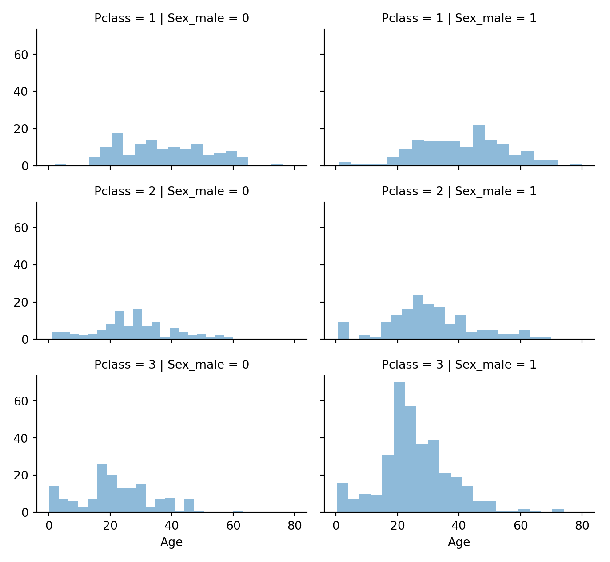
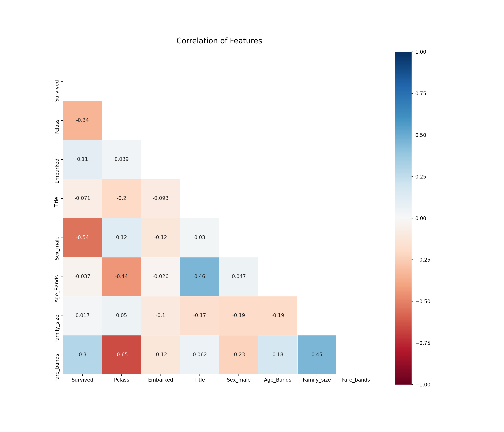

Chapter 2 Titanic
2.1 Imports
Import the packages that will be used throughout the project.
import os
import random as rnd
import matplotlib.pyplot as plt
import numpy as np
import pandas as pd
import seaborn as sns
from sklearn.metrics import (
classification_report,
confusion_matrix,
explained_variance_score,
mean_absolute_error,
mean_squared_error,
)
from xgboost import XGBRegressorImport the data, and combine the data frames to be able to process all the data in one go (opposed to working on the test and training datasets separately).
df_train = pd.read_csv("~/docs/codeing/python/titanic/train.csv")
df_test = pd.read_csv("~/docs/codeing/python/titanic/test.csv")
df = pd.concat([df_train, df_test])2.2 Data
Show a random sample of the data
df_sample = df.sample(n=10)| Data Frame Head | |||||||||||
|---|---|---|---|---|---|---|---|---|---|---|---|
| A random selection of 10 rows of the Titanic data. | |||||||||||
| PassengerId | Survived | Pclass | Name | Sex | Age | SibSp | Parch | Ticket | Fare | Cabin | Embarked |
| 564 | 0 | 3 | Simmons, Mr. John | male | NaN | 0 | 0 | SOTON/OQ 392082 | 8.0500 | NaN | S |
| 79 | 1 | 2 | Caldwell, Master. Alden Gates | male | 0.83 | 0 | 2 | 248738 | 29.0000 | NaN | S |
| 392 | 1 | 3 | Jansson, Mr. Carl Olof | male | 21.00 | 0 | 0 | 350034 | 7.7958 | NaN | S |
| 881 | 1 | 2 | Shelley, Mrs. William (Imanita Parrish Hall) | female | 25.00 | 0 | 1 | 230433 | 26.0000 | NaN | S |
| 972 | NaN | 3 | Boulos, Master. Akar | male | 6.00 | 1 | 1 | 2678 | 15.2458 | NaN | C |
| 384 | 1 | 1 | Holverson, Mrs. Alexander Oskar (Mary Aline Towner) | female | 35.00 | 1 | 0 | 113789 | 52.0000 | NaN | S |
| 248 | 1 | 2 | Hamalainen, Mrs. William (Anna) | female | 24.00 | 0 | 2 | 250649 | 14.5000 | NaN | S |
| 711 | 1 | 1 | Mayne, Mlle. Berthe Antonine ("Mrs de Villiers") | female | 24.00 | 0 | 0 | PC 17482 | 49.5042 | C90 | C |
| 527 | 1 | 2 | Ridsdale, Miss. Lucy | female | 50.00 | 0 | 0 | W./C. 14258 | 10.5000 | NaN | S |
| 44 | 1 | 2 | Laroche, Miss. Simonne Marie Anne Andree | female | 3.00 | 1 | 2 | SC/Paris 2123 | 41.5792 | NaN | C |
Print out the description of the data
df_describe_num = round(df.describe(), 2)
df_describe_cat = df.describe(include="O").transpose()
| Numerical Features | |||||||
|---|---|---|---|---|---|---|---|
| Description of the numerical features. | |||||||
| PassengerId | Survived | Pclass | Age | SibSp | Parch | Fare | |
| count | 1309.00 | 891.00 | 1309.00 | 1046.00 | 1309.00 | 1309.00 | 1308.00 |
| mean | 655.00 | 0.38 | 2.29 | 29.88 | 0.50 | 0.39 | 33.30 |
| std | 378.02 | 0.49 | 0.84 | 14.41 | 1.04 | 0.87 | 51.76 |
| min | 1.00 | 0.00 | 1.00 | 0.17 | 0.00 | 0.00 | 0.00 |
| 25% | 328.00 | 0.00 | 2.00 | 21.00 | 0.00 | 0.00 | 7.90 |
| 50% | 655.00 | 0.00 | 3.00 | 28.00 | 0.00 | 0.00 | 14.45 |
| 75% | 982.00 | 1.00 | 3.00 | 39.00 | 1.00 | 0.00 | 31.28 |
| max | 1309.00 | 1.00 | 3.00 | 80.00 | 8.00 | 9.00 | 512.33 |
| Categorical Features | ||||
|---|---|---|---|---|
| Description of the categorical features. | ||||
| count | unique | top | freq | |
| Name | 1309 | 1307 | Connolly, Miss. Kate | 2 |
| Sex | 1309 | 2 | male | 843 |
| Ticket | 1309 | 929 | CA. 2343 | 11 |
| Cabin | 295 | 186 | C23 C25 C27 | 6 |
| Embarked | 1307 | 3 | S | 914 |
2.3 EDA
2.3.1 Missing Data
Show missing data in a clear heatmap.
f, ax = plt.subplots(nrows=1, ncols=1, figsize=(12,10))
sns.heatmap(df.isnull(),
yticklabels=False,
cbar=False,
cmap="Blues"
)
ax.set_title('Fields with Missing Values', fontsize=16)
for tick in ax.yaxis.get_major_ticks():
tick.label.set_fontsize(14)
plt.savefig("01_missing_data_heatmap")
plt.show()
Show the specific values.
def missing_only(value):
if value == 0 : return np.nan
else: return value
missing_values = pd.DataFrame()
missing_values['Percentage'] = np.round((df.isna().sum() / df.count().max()) * 100, 2).apply(lambda value: missing_only(value)).dropna()
missing_values['Counts'] = np.round(df.isna().sum(), 2).apply(lambda value: missing_only(value)).dropna()| Missing values | ||
|---|---|---|
| Missing values only on features with missing values. | ||
| Percentage | Counts | |
| Survived | 31.93 | 418 |
| Age | 20.09 | 263 |
| Fare | 0.08 | 1 |
| Cabin | 77.46 | 1014 |
| Embarked | 0.15 | 2 |
2.3.2 Correlation
Show the correlation between the survival rate and the other features.
TARGET = "Survived"
plt.figure(figsize=(14, 8))
df.corr()[TARGET].sort_values()[:-1].plot(kind="bar")
plt.savefig("correlation_barplot")
plt.show()
Show the correlation between all features.
plt.figure(figsize=(14, 12))
plt.title('Correlation of Features', y=1.05, size=15)
mask = np.zeros_like(df.corr())
mask[np.triu_indices_from(mask)] = True
sns.heatmap(
df.corr(),
annot=True,
linewidths=0.2,
linecolor='white',
cmap="RdBu",
center=0,
mask=mask,
vmax=1.0,
vmin=-1.0,
square=True,
)
plt.savefig("correlation_map")
plt.show()
2.3.3 Pivot Features
def pivot_feature(df, TARGET, FEATURE):
"""
Input the
- data frame
- target feature
- relevant feature (only for features which are categorical (Sex),
ordinal (Passenger class) or discrete (Sibbling count)).
"""
return (df[[FEATURE, TARGET
]].groupby([FEATURE]).mean().sort_values(by=FEATURE,
ascending=False))
pivot_feature(df, "Survived", "Pclass")## Survived
## Pclass
## 3 0.242363
## 2 0.472826
## 1 0.629630pivot_feature(df, "Survived", "Sex")## Survived
## Sex
## male 0.188908
## female 0.742038pivot_feature(df, "Survived", "SibSp")## Survived
## SibSp
## 8 0.000000
## 5 0.000000
## 4 0.166667
## 3 0.250000
## 2 0.464286
## 1 0.535885
## 0 0.345395pivot_feature(df, "Survived", "Parch")## Survived
## Parch
## 9 NaN
## 6 0.000000
## 5 0.200000
## 4 0.000000
## 3 0.600000
## 2 0.500000
## 1 0.550847
## 0 0.3436582.4 Visualization
def plot_corr_numerical(df, TARGET, FEATURE):
"""
Data Frame
Target feature
Feature of intrest
"""
g = sns.FacetGrid(df, col=TARGET)
g.map(plt.hist, FEATURE, bins=20)
plt.savefig("04_corr_numerical_" + TARGET + "_" + FEATURE)
plt.show()
plot_corr_numerical(df, "Survived", "Age")def plot_corr_num_ord(df, TARGET, numerical_FEATURE, ordinal_FEATURE):
"""
Data Frame
Target feature
numerical feature of intrest
ordinal feature of intrest
"""
g = sns.FacetGrid(df,
col=TARGET,
row=ordinal_FEATURE,
size=2.2,
aspect=1.6)
g.map(plt.hist, numerical_FEATURE, alpha=0.5, bins=20)
g.add_legend()
plt.savefig("04_corr_num_ord_" + TARGET + "_" + numerical_FEATURE + "_" +
ordinal_FEATURE)
plt.show()
plot_corr_num_ord(df, "Survived", "Age", "Pclass")## /nix/store/lz8yaf1c80c6zb3qj11j58x3qq366wxx-python3.8-seaborn-0.11.0/lib/python3.8/site-packages/seaborn/axisgrid.py:316: UserWarning: The `size` parameter has been renamed to `height`; please update your code.
## warnings.warn(msg, UserWarning)def plot_corr_cat(
df,
TARGET,
categorical_FEATURE,
categorical_FEATURE_x_axis,
categorical_FEATURE_new_line,
):
"""
Data Frame
Target feature - y axis
categorical feature - facet row
feature of intrest
feature of intrest
"""
g = sns.FacetGrid(df, row=categorical_FEATURE, size=2.2, aspect=1.6)
g.map(
sns.pointplot,
categorical_FEATURE_x_axis,
TARGET,
categorical_FEATURE_new_line,
palette="deep",
)
g.add_legend()
plt.savefig("04_corr_cat_" + TARGET + "_" + categorical_FEATURE_x_axis +
"_" + categorical_FEATURE_new_line)
plot_corr_cat(df, "Survived", "Embarked", "Pclass", "Sex")## /nix/store/lz8yaf1c80c6zb3qj11j58x3qq366wxx-python3.8-seaborn-0.11.0/lib/python3.8/site-packages/seaborn/axisgrid.py:316: UserWarning: The `size` parameter has been renamed to `height`; please update your code.
## warnings.warn(msg, UserWarning)
## /nix/store/lz8yaf1c80c6zb3qj11j58x3qq366wxx-python3.8-seaborn-0.11.0/lib/python3.8/site-packages/seaborn/axisgrid.py:645: UserWarning: Using the pointplot function without specifying `order` is likely to produce an incorrect plot.
## warnings.warn(warning)
## /nix/store/lz8yaf1c80c6zb3qj11j58x3qq366wxx-python3.8-seaborn-0.11.0/lib/python3.8/site-packages/seaborn/axisgrid.py:650: UserWarning: Using the pointplot function without specifying `hue_order` is likely to produce an incorrect plot.
## warnings.warn(warning)def plot_corr_cat_num(
df,
TARGET,
categorical_FEATURE_facet_row,
categorical_FEATURE_y_axis,
categorical_FEATURE_x_axis,
):
"""
Data Frame
Target feature - y axis
categorical feature - facet row
feature of intrest
feature of intrest
"""
g = sns.FacetGrid(df,
row=categorical_FEATURE_facet_row,
col=TARGET,
size=2.2,
aspect=1.6)
g.map(
sns.barplot,
categorical_FEATURE_x_axis,
categorical_FEATURE_y_axis,
palette="deep",
alpha=0.5,
ci=None,
)
g.add_legend()
plt.savefig("04_corr_cat_num_" + TARGET + "_" +
categorical_FEATURE_x_axis + "_" + categorical_FEATURE_y_axis)
plt.show()
plot_corr_cat_num(df, "Survived", "Embarked", "Fare", "Sex")## /nix/store/lz8yaf1c80c6zb3qj11j58x3qq366wxx-python3.8-seaborn-0.11.0/lib/python3.8/site-packages/seaborn/axisgrid.py:316: UserWarning: The `size` parameter has been renamed to `height`; please update your code.
## warnings.warn(msg, UserWarning)
## /nix/store/lz8yaf1c80c6zb3qj11j58x3qq366wxx-python3.8-seaborn-0.11.0/lib/python3.8/site-packages/seaborn/axisgrid.py:645: UserWarning: Using the barplot function without specifying `order` is likely to produce an incorrect plot.
## warnings.warn(warning)df.drop(["Ticket", "Cabin", "PassengerId"], inplace=True, axis=1)2.4.1 Feature Engineering
df["Title"] = df["Name"].str.extract(" ([A-Za-z]+)\.",
expand=False) ## get word before the .
pd.crosstab(df["Title"], df["Sex"])## Sex female male
## Title
## Capt 0 1
## Col 0 4
## Countess 1 0
## Don 0 1
## Dona 1 0
## Dr 1 7
## Jonkheer 0 1
## Lady 1 0
## Major 0 2
## Master 0 61
## Miss 260 0
## Mlle 2 0
## Mme 1 0
## Mr 0 757
## Mrs 197 0
## Ms 2 0
## Rev 0 8
## Sir 0 1df["Title"].unique()## array(['Mr', 'Mrs', 'Miss', 'Master', 'Don', 'Rev', 'Dr', 'Mme', 'Ms',
## 'Major', 'Lady', 'Sir', 'Mlle', 'Col', 'Capt', 'Countess',
## 'Jonkheer', 'Dona'], dtype=object)def repace_values_with(df, FEATURE, LIST, REPLACE_WITH):
"""
Replace values in a column with ...
"""
df[FEATURE] = df[FEATURE].replace(LIST, REPLACE_WITH)
repace_values_with(
df,
"Title",
[
"Don", "Rev", "Dr", "Major", "Lady", "Sir", "Col", "Capt", "Countess",
"Jonkheer"
],
"Rare",
)
repace_values_with(df, "Title", "Mlle", "Miss")
repace_values_with(df, "Title", "Ms", "Miss")
repace_values_with(df, "Title", "Mme", "Mrs")
df[["Title", "Survived"]].groupby(["Title"], as_index=False).mean()## Title Survived
## 0 Dona NaN
## 1 Master 0.575000
## 2 Miss 0.702703
## 3 Mr 0.156673
## 4 Mrs 0.793651
## 5 Rare 0.347826def cat_to_ord(df, FEATURE, DICT):
df[FEATURE] = df[FEATURE].map(DICT).fillna(0)
cat_to_ord(df, "Title", {
"Master": 1,
"Miss": 2,
"Mr": 3,
"Mrs": 4,
"Rare": 5,
})
df.drop(["Name"], inplace=True, axis=1)
def dummify(df, features_list):
return pd.get_dummies(
df,
columns=features_list,
drop_first=True,
)
df = dummify(df, ["Sex"])
g = sns.FacetGrid(df, row="Pclass", col="Sex_male", size=2.2, aspect=1.6)## /nix/store/lz8yaf1c80c6zb3qj11j58x3qq366wxx-python3.8-seaborn-0.11.0/lib/python3.8/site-packages/seaborn/axisgrid.py:316: UserWarning: The `size` parameter has been renamed to `height`; please update your code.
## warnings.warn(msg, UserWarning)g.map(plt.hist, "Age", alpha=0.5, bins=20)## <seaborn.axisgrid.FacetGrid object at 0x7f268cd11d30>g.add_legend()## <seaborn.axisgrid.FacetGrid object at 0x7f268cd11d30>plt.savefig("06_hist_")
plt.show()
guess_ages = np.zeros((2, 3))
for i in range(0, 2):
for j in range(0, 3):
guess_df = df[(df["Sex_male"] == i)
& (df["Pclass"] == j + 1)]["Age"].dropna()
## age_mean = guess_df.mean()
# age_std = guess_df.std()
## age_guess = rnd.uniform(age_mean - age_std, age_mean + age_std)
age_guess = guess_df.median()
## Convert random age float to nearest .5 age
guess_ages[i, j] = int(age_guess / 0.5 + 0.5) * 0.5
for i in range(0, 2):
for j in range(0, 3):
df.loc[(df.Age.isnull()) & (df.Sex_male == i) & (df.Pclass == j + 1),
"Age", ] = guess_ages[i, j]
df["Age"] = df["Age"].astype(int)
df.head()## Survived Pclass Age SibSp Parch Fare Embarked Title Sex_male
## 0 0.0 3 22 1 0 7.2500 S 3.0 1
## 1 1.0 1 38 1 0 71.2833 C 4.0 0
## 2 1.0 3 26 0 0 7.9250 S 2.0 0
## 3 1.0 1 35 1 0 53.1000 S 4.0 0
## 4 0.0 3 35 0 0 8.0500 S 3.0 1df["Age_Band"] = pd.cut(df["Age"], 5)
df[["Age_Band",
"Survived"]].groupby(["Age_Band"],
as_index=False).mean().sort_values(by="Age_Band",
ascending=True)## Age_Band Survived
## 0 (-0.08, 16.0] 0.550000
## 1 (16.0, 32.0] 0.337374
## 2 (32.0, 48.0] 0.412037
## 3 (48.0, 64.0] 0.434783
## 4 (64.0, 80.0] 0.090909DATA_FRAME = df
COL = "Age"
def function1(col_value):
if col_value <= 16:
return 0
elif (col_value > 16) & (col_value <= 32):
return 1
elif (col_value > 32) & (col_value <= 48):
return 2
elif (col_value > 48) & (col_value <= 64):
return 3
else:
return 4
df["Age_Bands"] = DATA_FRAME[COL].apply(lambda col_value: function1(col_value))
df["Family_size"] = df["SibSp"] + df["Parch"] + 1
df[["Family_size",
"Survived"]].groupby(["Family_size"],
as_index=False).mean().sort_values(by="Survived",
ascending=False)## Family_size Survived
## 3 4 0.724138
## 2 3 0.578431
## 1 2 0.552795
## 6 7 0.333333
## 0 1 0.303538
## 4 5 0.200000
## 5 6 0.136364
## 7 8 0.000000
## 8 11 0.000000DATA_FRAME = df
COL = "Family_size"
def function1(col_value):
if col_value >= 2:
return 0
else:
return 1
df["Is_alone"] = DATA_FRAME[COL].apply(lambda col_value: function1(col_value))
df[["Is_alone",
"Survived"]].groupby(["Is_alone"]).mean().sort_values(by="Survived")## Survived
## Is_alone
## 1 0.303538
## 0 0.505650df["Embarked"].fillna("S", inplace=True)
df["Embarked"] = df["Embarked"].map({"S": 0, "C": 1, "Q": 2}).astype(int)
print(pd.qcut(df["Fare"], 4)[[]])## Series([], Name: Fare, dtype: category
## Categories (4, interval[float64]): [(-0.001, 7.896] < (7.896, 14.454] < (14.454, 31.275] <
## (31.275, 512.329]])DATA_FRAME = df
COL = "Fare"
def function1(col_value):
if col_value <= 7.91:
return 0
elif (col_value >= 7.91) & (col_value <= 14.454):
return 1
elif (col_value >= 14.454) & (col_value <= 31.0):
return 2
else:
return 3
df["Fare_bands"] = DATA_FRAME[COL].apply(
lambda col_value: function1(col_value))
df.drop(["SibSp", "Parch", "Age_Band", "Is_alone", "Fare", "Age"],
inplace=True,
axis=1)
plt.figure(figsize=(14, 12))
plt.title('Correlation of Features', y=1.05, size=15)
mask = np.zeros_like(df.corr())
mask[np.triu_indices_from(mask)] = True
sns.heatmap(
df.astype(float).corr(),
annot=True,
linewidths=0.2,
linecolor='white',
cmap="RdBu",
center=0,
mask=mask,
vmax=1.0,
vmin=-1.0,
square=True,
)
plt.savefig("03_correlation_map_2")
plt.show()
2.5 Models
2.5.1 Prepartion
TARGET_COL = "Survived"
df = df[~df[TARGET_COL].isna()] ## ~ = not
## df = df.sample(frac=0.2,random_state=101)
feat = df.drop(TARGET_COL, axis=1)
tar = df[TARGET_COL]
from sklearn.model_selection import train_test_split
feat_train, feat_test, tar_train, tar_test = train_test_split(feat, tar, test_size=0.3)2.5.2 Run Models
from sklearn.ensemble import RandomForestClassifier
from sklearn.linear_model import LogisticRegression, Perceptron, SGDClassifier
from sklearn.naive_bayes import GaussianNB
from sklearn.neighbors import KNeighborsClassifier
from sklearn.svm import SVC, LinearSVC
from sklearn.tree import DecisionTreeClassifier
import xgboost as xgb
def knn_value_plot(feat_train, tar_train, feat_test, tar_test, max_range):
"""
Iterate to get the best k value and plot it,
between 1 and the max_range
"""
error_rate = []
for i in range(1, max_range):
model_knn = KNeighborsClassifier(n_neighbors=i)
model_knn.fit(feat_train, tar_train)
pred_knn = model_knn.predict(feat_test)
error_rate.append(np.mean(pred_knn != tar_test))
plt.clf()
sns.lineplot(x=range(1, max_range), y=error_rate)
plt.savefig("model_knn_n_values")
# knn_value_plot(feat_train, tar_train, feat_test, tar_test, 30)
#
knn_n_value = 5
def basic_models(feat_train, tar_train, feat_test, tar_test, knn_neighbours):
"""
A set of all the basic models to be easily applied,
Returns the logistic correlation, and the % score of each model
Also globally exports the predications of each model as ex. pred_logreg
"""
# Imports
# Values to be exported
global pred_rfc
global pred_logreg
global pred_svc
global pred_rfc
global pred_gaus
global pred_perc
global pred_sgd
global pred_linear_svc
global pred_dtree
global pred_knn
global pred_xgb
# LogisticRegression
model_logreg = LogisticRegression().fit(feat_train, tar_train)
pred_logreg = model_logreg.predict(feat_test)
# knn
model_knn = KNeighborsClassifier(n_neighbors=knn_neighbours).fit(
feat_train, tar_train)
pred_knn = model_knn.predict(feat_test)
# SVM
model_svc = SVC().fit(feat_train, tar_train)
pred_svc = model_svc.predict(feat_test)
# GaussianNB
model_gaus = GaussianNB().fit(feat_train, tar_train)
pred_gaus = model_gaus.predict(feat_test)
# Perceptron
model_perc = Perceptron().fit(feat_train, tar_train)
pred_perc = model_perc.predict(feat_test)
# LinearSVC
model_linear_svc = LinearSVC().fit(feat_train, tar_train)
pred_linear_svc = model_perc.predict(feat_test)
# Stochastic Gradient Descent
model_sgd = SGDClassifier().fit(feat_train, tar_train)
pred_sgd = model_perc.predict(feat_test)
# DecisionTreeClassifier
model_dtree = DecisionTreeClassifier().fit(feat_train, tar_train)
pred_dtree = model_dtree.predict(feat_test)
# RandomForestClassifier
model_rfc = RandomForestClassifier(n_estimators=200).fit(feat_train, tar_train)
pred_rfc = model_rfc.predict(feat_test)
#
model_xgb = xgb.XGBClassifier().fit(feat_train, tar_train)
pred_xgb = model_xgb.predict(feat_test)
# LogisticRegression Correlations
coeff_df = pd.DataFrame(feat_train.columns)
coeff_df.columns = ["Feature"]
coeff_df["Correlation"] = pd.Series(model_logreg.coef_[0])
coeff_df = coeff_df.sort_values(by="Correlation", ascending=False)
# Result score
models = pd.DataFrame({
"Model": [
"Logistic Regression",
"Support Vector Machines",
"Random Forest",
"Naive Bayes",
"Perceptron",
"Stochastic Gradient Decent",
"Linear SVC",
"Decision Tree",
"KNN",
"Xgboost"
],
"Score": [
round(model_logreg.score(feat_test, tar_test) * 100, 2),
round(model_svc.score(feat_test, tar_test) * 100, 2),
round(model_rfc.score(feat_test, tar_test) * 100, 2),
round(model_gaus.score(feat_test, tar_test) * 100, 2),
round(model_perc.score(feat_test, tar_test) * 100, 2),
round(model_sgd.score(feat_test, tar_test) * 100, 2),
round(model_linear_svc.score(feat_test, tar_test) * 100, 2),
round(model_dtree.score(feat_test, tar_test) * 100, 2),
round(model_knn.score(feat_test, tar_test) * 100, 2),
round(model_xgb.score(feat_test, tar_test) * 100, 2),
],
}).sort_values(by="Score", ascending=False)
return (coeff_df, print("\n\n"), models)
basic_models(feat_train, tar_train, feat_test, tar_test, knn_n_value)
## ##
# import xgboost as xgb
# ## @knitr model_xgboost
# RANGE = np.arange(.5, 1.5, .1)
# error_rate = []
# for i in RANGE:
# model_xgb = xgb.XGBClassifier(
# learning_rate = 0.5,
# # n_estimators= 2000,
# # max_depth= i,
# # min_child_weight= 2,
# gamma= .77, #gamma=1,
# subsample=.5,
# colsample_bytree=1,
# # objective= 'binary:logistic',
# # nthread= -1,
# scale_pos_weight=i,
# ).fit(feat_train, tar_train)
# pred_xgb = model_xgb.predict(feat_test)
# # error_rate.append(round(model_xgb.score(feat_test, tar_test) * 100, 2))
# print('value: ', round(i, 3), 'result: ', round(model_xgb.score(feat_test, tar_test) * 100, 2))
# sns.lineplot(x=RANGE, y=error_rate)
# plt.savefig("model_xgb_scale_pos")
# plt.cla()
####
##
##
## ( Feature Correlation
## 6 Fare_bands 0.293955
## 1 Embarked 0.179744
## 5 Family_size -0.279801
## 2 Title -0.330510
## 4 Age_Bands -0.567774
## 0 Pclass -1.075916
## 3 Sex_male -2.692426, None, Model Score
## 1 Support Vector Machines 81.72
## 9 Xgboost 80.97
## 8 KNN 79.85
## 2 Random Forest 79.48
## 7 Decision Tree 77.99
## 6 Linear SVC 76.49
## 0 Logistic Regression 76.12
## 3 Naive Bayes 75.37
## 4 Perceptron 73.88
## 5 Stochastic Gradient Decent 69.78)
##
## /nix/store/64ka5flvkgi6rw2xz1bxp28prrks09dg-python3.8-scikit-learn-0.23.2/lib/python3.8/site-packages/sklearn/svm/_base.py:976: ConvergenceWarning: Liblinear failed to converge, increase the number of iterations.
## warnings.warn("Liblinear failed to converge, increase "2.5.3 Xgboost model
import xgboost as xgb
model_xgb = xgb.XGBClassifier(
).fit(feat_train, tar_train)
pred_xgb = model_xgb.predict(feat_test)
print('baseline', round(model_xgb.score(feat_test, tar_test) * 100,2))## baseline 80.97import xgboost as xgb
model_xgb = xgb.XGBClassifier(
learning_rate = .5,
gamma=0.77, #gamma=1,
subsample=0.5,
).fit(feat_train, tar_train)
pred_xgb = model_xgb.predict(feat_test)
print('personal', round(model_xgb.score(feat_test, tar_test) * 100, 2))
#### personal 78.73